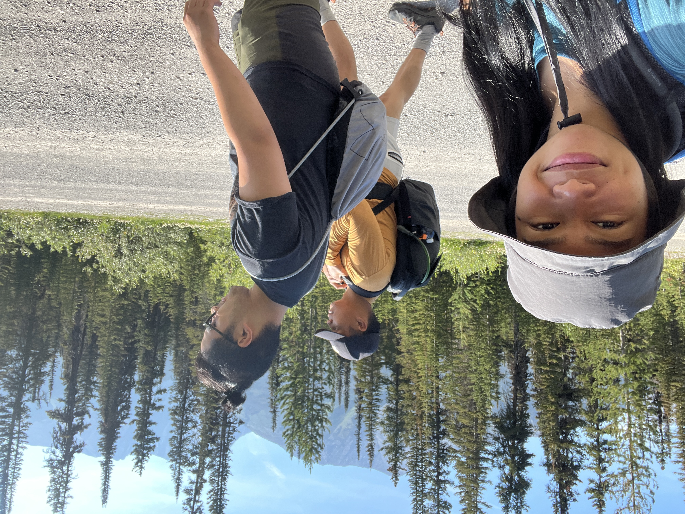
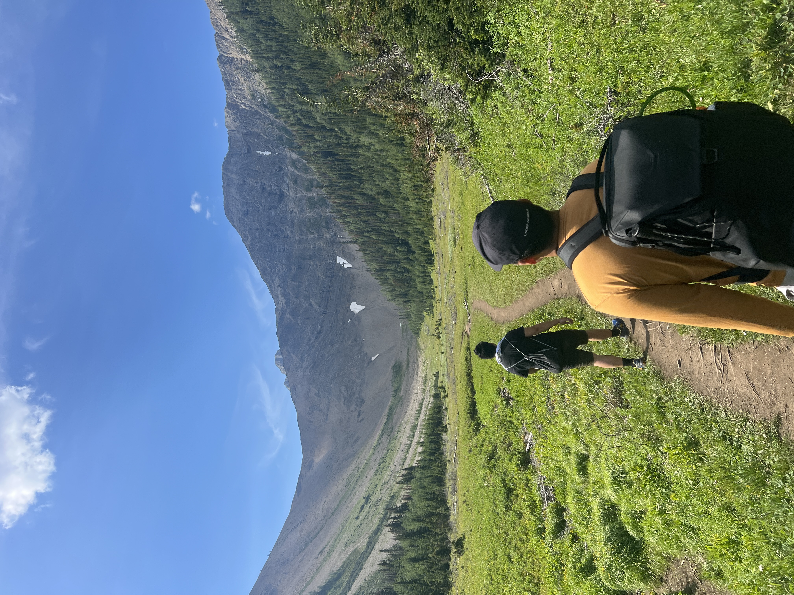
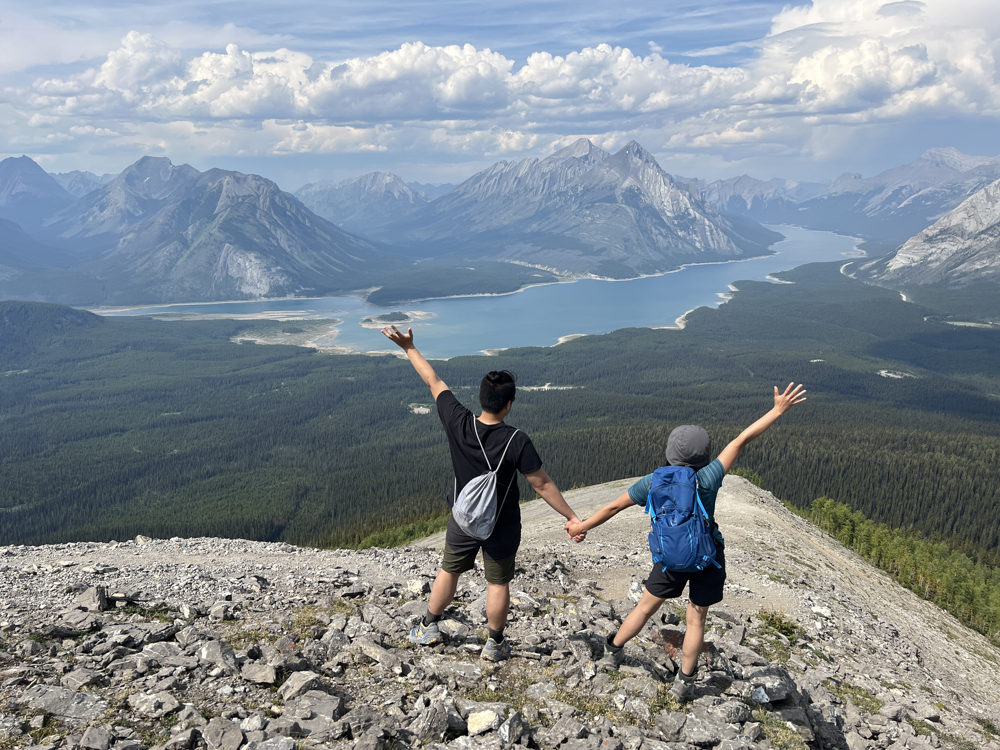
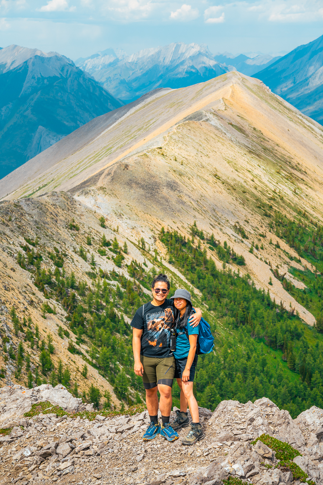
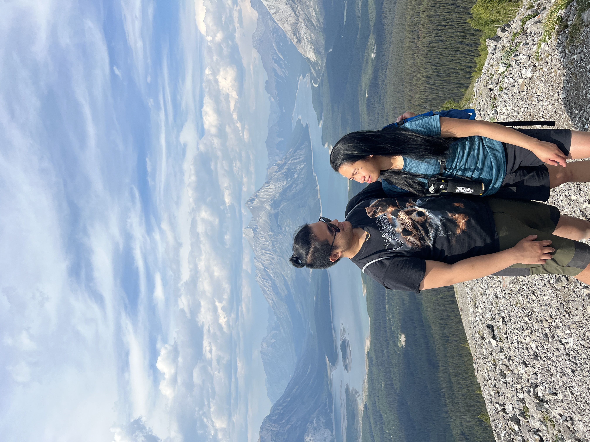
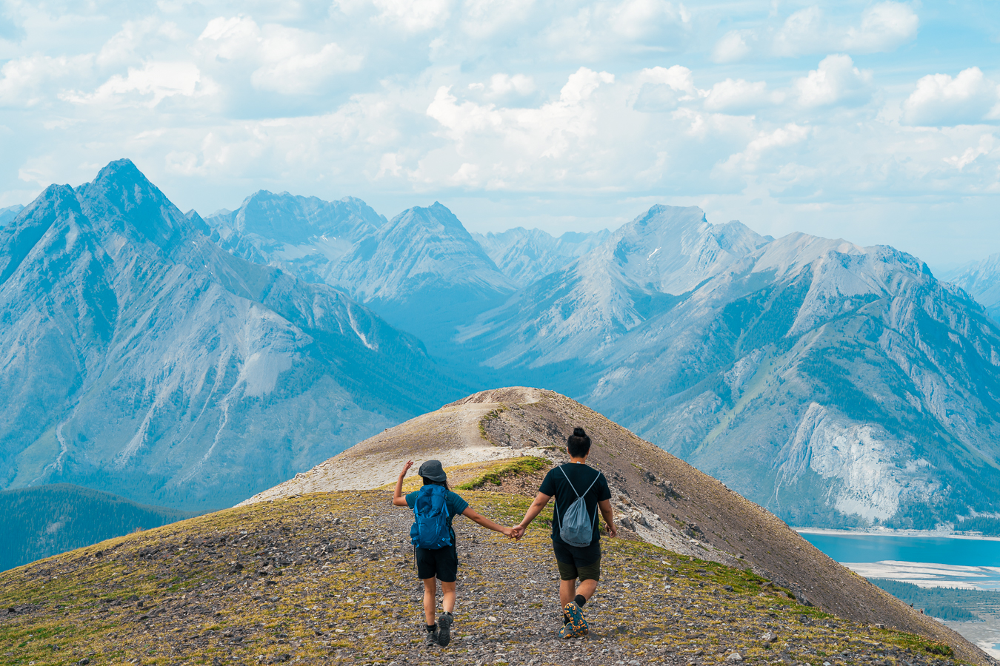
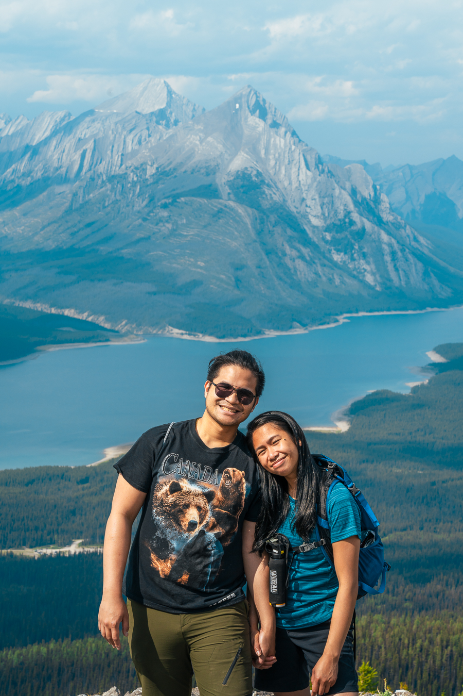
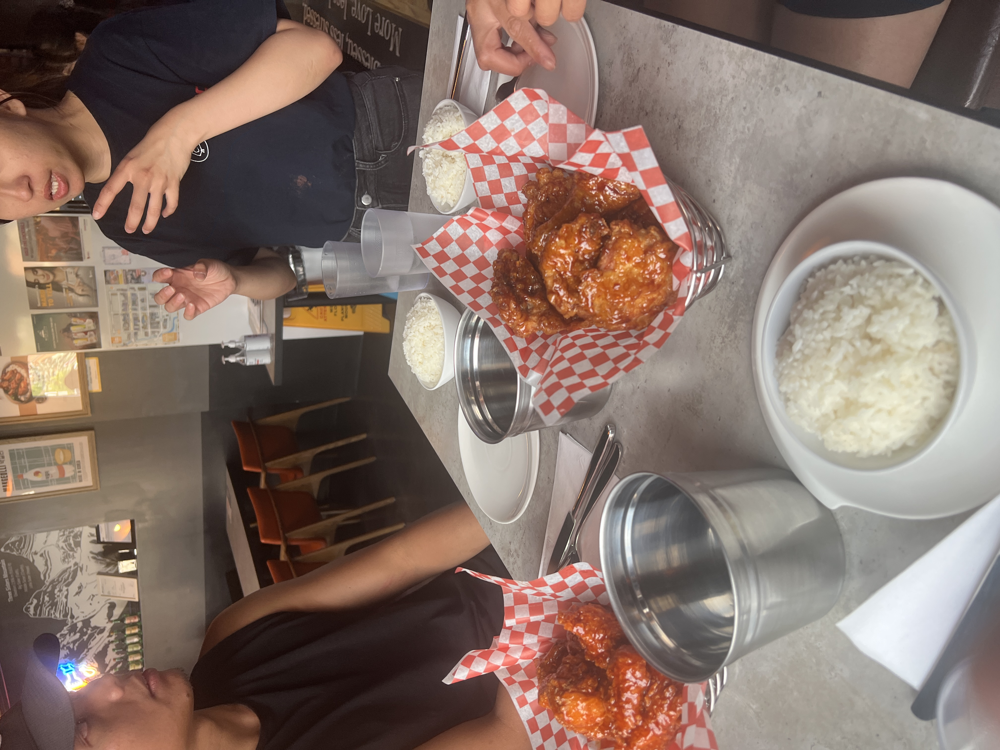
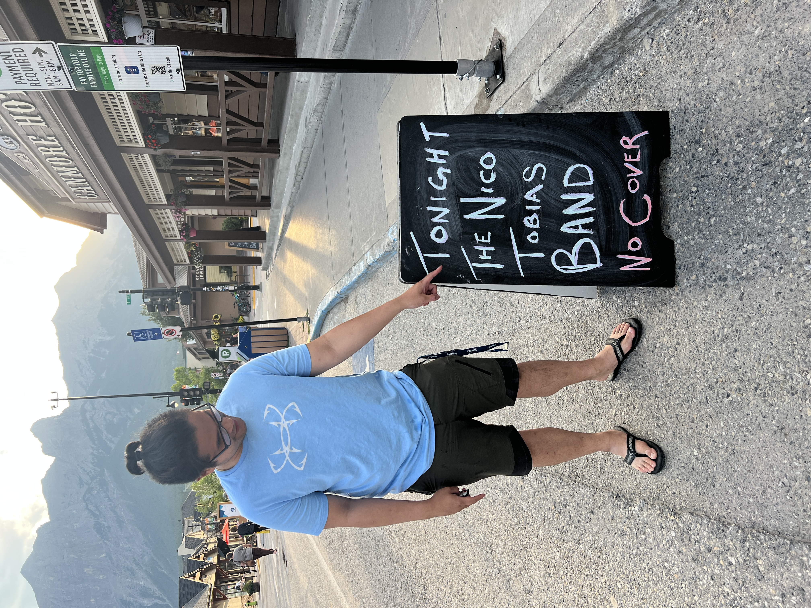

Jul 21 2023 - Tent Ridge: A Love Story
Just three days before this trip, I managed to sprain my foot. A perfectly sane person probably would have stayed home, iced it, and rested. But when Sarah flashes that smile and says we're going on an adventure, you lace up your boots, swallow the pain, and get walking! With our good friend Kelvin tagging along as our designated third wheel and hype man, we set off to conquer Tent Ridge.

10:39 AM — Fresh faces and zero regrets (yet!). Sarah leading the charge while Kelvin and I mentally prepare for the elevation.

11:43 AM — Into the valley we go. Looking up at that intimidating ridge, my sprained foot gave a little throb, but there was no turning back now.
Somewhere between the valley and the peaks, things got real. We took a quick video break to capture the struggle, but we completely missed taking a photo during the hardest part of the scramble. Let's just say we were way too busy surviving to document it!

4:04 PM — We made it! Sprained foot and all, standing on top of the world with my favorite person. The pain was entirely forgotten.

4:29 PM — Obligatory summit power pose. The views were breathtaking, but she's still the prettiest thing in this picture.

4:33 PM — Just soaking it all in together. Every step of the struggle was worth this exact moment.

5:26 PM — Hand in hand, walking the horseshoe ridge. Even with a limp, I'd walk any trail as long as she's holding my hand.

6:24 PM — Exhausted, accomplished, and so incredibly happy. A sweet little shoulder rest before the final descent back to the car.

7:32 PM — The ultimate reward: Korean fried chicken! Kelvin and Sarah discussing the hike while I focus on the real prize.

8:07 PM — Ending the perfect day in Canmore. No cover charge, great live music, and the best company I could possibly ask for. I still prevailed!